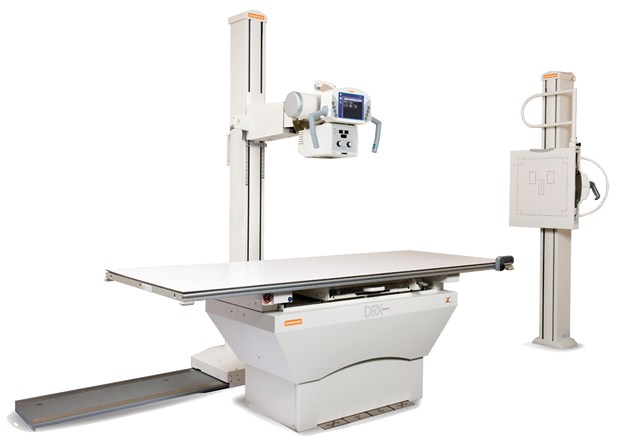

Drx ascend

DESCRIPCIÓN:
Los sistemas DRX-ASCEND ofrecen funciones completas de posicionamiento, a la vez que proporcionan el mayor nivel de calidad de imagen y asistencia al paciente.
CARACTERÍSTICAS:
• Cuenta con una flexibilidad de posicionamiento por medio del detector DRX inalámbrico portátil.
• Soporte de tubo de alta gama que proporciona una amplia libertad de movimiento.
• Innovadora mesa elevable de tablero flotante “Quiet Lift”.
• Disponible con tecnología TechVision™.
• Diseño de montaje en el piso que ahorra espacio y reduce los costos de instalación.
DATOS COMPLEMENTARIOS: Si desea obtener más información sobre los DETECTORES DRX, favor de contactar al representante CARESTREAM de su localidad o a:
CARESTREAM
Teléfono: (33) 3134-6200
o bien, visítenos en: www.carestream.com.mx